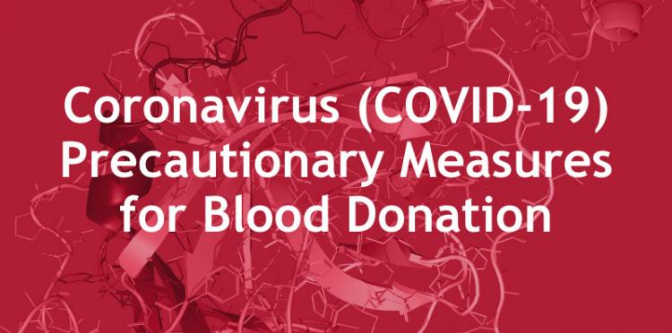

COVID-19 concerns
The virus that causes coronavirus disease 2019 (COVID-19) hasn't been shown to be transmitted through blood transfusions. However, the U.S. Food and Drug Administration suggests waiting to donate blood for at least 14 days after a positive diagnostic test for COVID-19 without symptoms or for at least 14 days after symptoms of COVID-19 have completely cleared up.
Those who have tested positive for COVID-19 antibodies but didn't have a diagnostic test and never developed symptoms can donate without a waiting period or having a diagnostic test done before donation.
If you get a nonreplicating, inactivated or mRNA-based COVID-19 vaccine, you can donate blood without a waiting period. However, if a live attenuated viral COVID-19 vaccine becomes available and you get it, wait 14 days after being vaccinated before donating blood. If you aren't sure what type of vaccine you got, wait 14 days before donating blood.
During the procedure
You lie or sit in a reclining chair with your arm extended on an armrest. If you have a preference for which arm or vein is used, share it. A blood pressure cuff or tourniquet is placed around your upper arm to fill your veins with more blood. This makes the veins easier to see and easier to insert the needle into, and also helps fill the blood bag more quickly. Then the skin on the inside of your elbow is cleaned.
A new, sterile needle is inserted into a vein in your arm. This needle is attached to a thin, plastic tube and a blood bag. Once the needle is in place, you tighten your fist several times to help the blood flow from the vein. Blood initially is collected into tubes for testing. When these have been collected, blood is allowed to fill the bag, about a pint (about half a liter). The needle is usually in place about 10 minutes. When complete, the needle is removed, a small bandage is placed on the needle site and a dressing is wrapped around your arm.
Another method of donating blood becoming increasingly common is apheresis. During apheresis, you are hooked up to a machine that can collect and separate blood components, such as red cells, plasma and platelets. This process allows more of a single component to be collected. It takes longer than standard blood donation — typically up to two hours.

After the procedure
After donating, you sit in an observation area, where you rest and eat a light snack. After 15 minutes, you can leave. After your blood donation:
Drink extra fluids.
Avoid strenuous physical activity or heavy lifting for about five hours.
If you feel lightheaded, lie down with your feet up until the feeling passes.
Keep your bandage on and dry for the next five hours.
If you have bleeding after removing the bandage, put pressure on the site and raise your arm until the bleeding stops.
If bruising occurs, apply a cold pack to the area periodically during the first 24 hours.
Consider adding iron-rich foods to your diet to replace the iron lost with blood donation.
Contact the blood donor center or your doctor if you:
Forgot to report any important health information.
Have signs and symptoms of an illness, such as a fever, within several days after your blood donation.
Are diagnosed with COVID-19 within 48 hours after donating blood.
Test (Results)
Your blood will be tested to determine your blood type and your Rh factor. Blood type is classified as A, B, AB or O. The Rh factor refers to the presence or absence of a specific antigen — a substance capable of stimulating an immune response — in the blood. You'll be classified as Rh positive or Rh negative, meaning you do or don't carry the antigen. This information is important because your blood type and Rh factor must be compatible with the blood type and Rh factor of the person receiving your blood.
Your blood will also be tested for bloodborne diseases, such as hepatitis and HIV. If these tests are negative, the blood is distributed for use in hospitals and clinics. If any of these tests are positive, the donor center notifies you, and your blood is discarded.